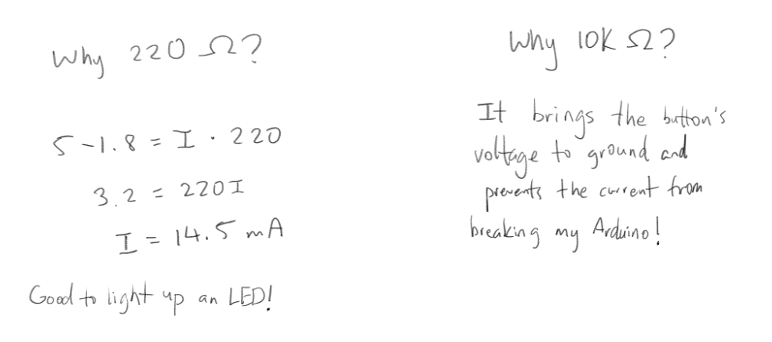

Here is all the documentation for assignment 2!
Here is all the documentation for assignment 2!
This is the circuit itself! The gif on the top of the page shows the function itself of the circuit.
This is why I chose the resistors that I had chosen for my circuit. I had chosen a 220 Ohm resistor and a 10K Ohm resistor.
// constants won't change. They're used here to set pin numbers:
const int buttonPin = 2; // the number of the pushbutton pin
const int ledPin = 10; // the number of the LED pin
const int ledPin2 = 13; //the number of the other LED pin
// variables will change:
int buttonState = 0; // variable for reading the pushbutton status
void setup() {
// initialize the LED pin as an output:
pinMode(ledPin, OUTPUT);
// initialize the LED pin as an output:
pinMode(ledPin2, OUTPUT);
// initialize the pushbutton pin as an input:
pinMode(buttonPin, INPUT);
}
void loop() {
// read the state of the pushbutton value:
buttonState = digitalRead(buttonPin);
// check if the pushbutton is pressed. If it is, the buttonState is HIGH:
if (buttonState == HIGH) {
// turn LED 2 on:
digitalWrite(ledPin2, HIGH);
//loop to fade on LED
for(int i = 0; i < 255; i++) {
analogWrite(ledPin, i); // turns on LED at a certain brightness
delay(10); // delays the brightness of the LED
}
digitalWrite(ledPin, HIGH); //keeps the LED on
} else {
// turn LEDs off:
digitalWrite(ledPin2, LOW); //turns non-fading LED off
digitalWrite(ledPin, LOW); //turns fading LED off
}
}
Draw a chart where X axis is time and the Y axis is voltage. Draw 3 lines representing the voltage across an LED with analogWrite(led, 64), analogWrite(led,128), and analogWrite(led, 255).